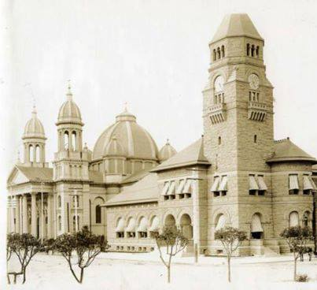
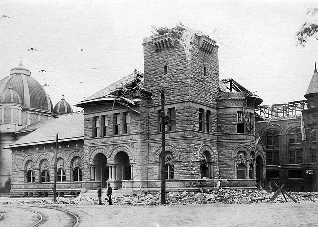
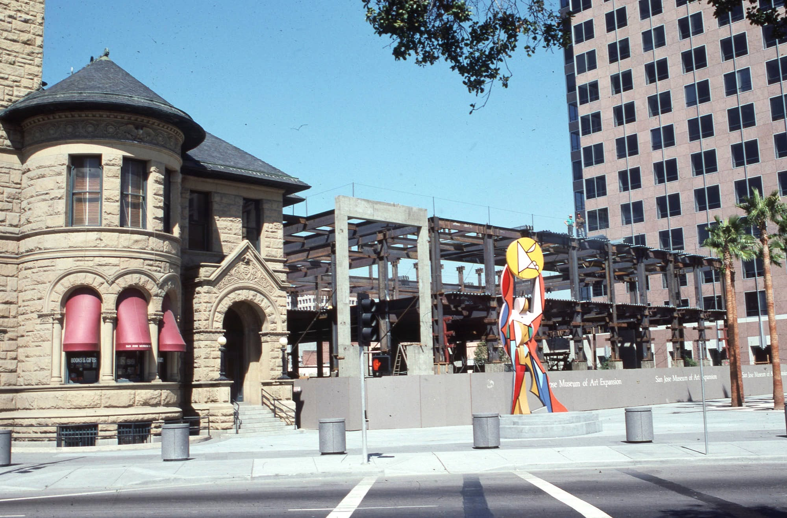

Stop 7 of 8
Cathedral Basilica + San Jose Museum of Art
Next: Diridon Station →
Historic Photos

The original 1892 post office before the 1906 earthquake damaged its clock tower.

The same tower after the earthquake, its upper stonework collapsed and never fully restored.

The San Jose Museum of Art's 1991 expansion under construction in 1989, with the original 1892 building still standing at left.